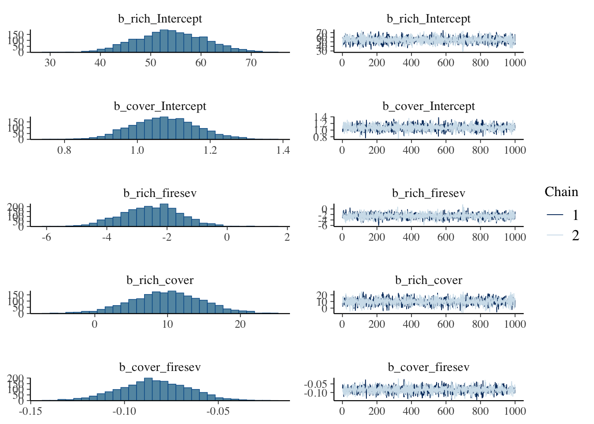
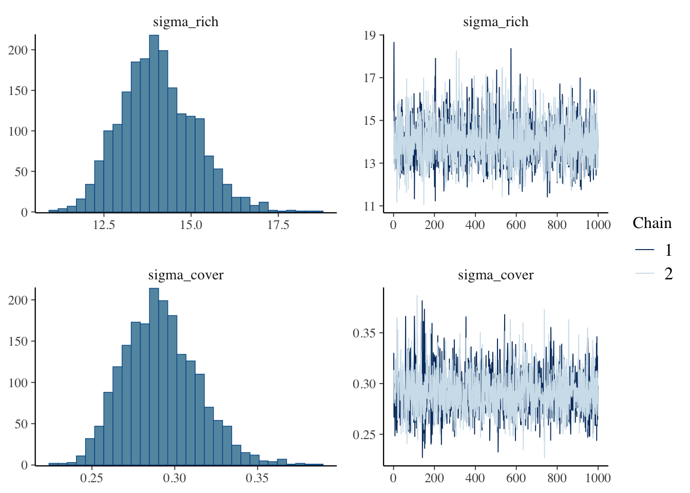

library(piecewiseSEM)
data(keeley)13 Bayesian causal models
Note
In this chapter, we will discuss how to fit causal models / structural equation models (SEMs) with Bayesian methods. You will learn
- How to fit Bayesian SEMs with blavaan (a Bayesian interface to lavaan)
- How to fit piecewise SEMs (a set of connected GLM(M)s) using piecewiseSEM and brms
- How to write a fully custom JAGS model for causal graphs that need latent variables or non-Gaussian responses
This chapter assumes you are aware of causal inference, causal graphs and structural equation models. For a general intro on these topics, see my lecture notes on advanced regression models, section causal inference here.
In this chapter, I will show you a few options to fit SEMs with Bayesian methods. We will use the keeley data provided in the package piecewiseSEM
13.1 Lavaan and blavaan
Lavaan is the most popular package to fit multivariate normal SEMs. The advantage of lavaan (over piecewiseSEM which we will use later) is that it can easily include latent factors in the analysis (which we will not use in this example). The downside of lavaan is that it can’t handle non-Gaussian responses.
Here the standard lavaan model:
library(lavaan)
library(lavaanPlot)
k_mod <- "
rich ~ firesev + cover
cover ~ firesev"
k_fit_lavaan <- sem(model = k_mod, data = keeley)Warning: lavaan->lav_data_full():
some observed variances are (at least) a factor 1000 times larger than
others; use varTable(fit) to investigatelavaanPlot(model=k_fit_lavaan, coefs = TRUE, sig = .05)Same as Bayesian fit using blavaan, which is a lavaan style interface to STAN
library(blavaan)
k_fit_blavaan = blavaan(model = k_mod, data = keeley,
auto.var=TRUE, auto.fix.first=TRUE,
auto.cov.lv.x=TRUE)Warning: lavaan->lav_data_full():
some observed variances are (at least) a factor 1000 times larger than
others; use varTable(fit) to investigateWarning: lavaan->lav_partable_check():
automatically added intercepts are set to zero: ("rich", "cover")
SAMPLING FOR MODEL 'stanmarg' NOW (CHAIN 1).
Chain 1:
Chain 1: Gradient evaluation took 0.000352 seconds
Chain 1: 1000 transitions using 10 leapfrog steps per transition would take 3.52 seconds.
Chain 1: Adjust your expectations accordingly!
Chain 1:
Chain 1:
Chain 1: Iteration: 1 / 1500 [ 0%] (Warmup)
Chain 1: Iteration: 150 / 1500 [ 10%] (Warmup)
Chain 1: Iteration: 300 / 1500 [ 20%] (Warmup)
Chain 1: Iteration: 450 / 1500 [ 30%] (Warmup)
Chain 1: Iteration: 501 / 1500 [ 33%] (Sampling)
Chain 1: Iteration: 650 / 1500 [ 43%] (Sampling)
Chain 1: Iteration: 800 / 1500 [ 53%] (Sampling)
Chain 1: Iteration: 950 / 1500 [ 63%] (Sampling)
Chain 1: Iteration: 1100 / 1500 [ 73%] (Sampling)
Chain 1: Iteration: 1250 / 1500 [ 83%] (Sampling)
Chain 1: Iteration: 1400 / 1500 [ 93%] (Sampling)
Chain 1: Iteration: 1500 / 1500 [100%] (Sampling)
Chain 1:
Chain 1: Elapsed Time: 0.472 seconds (Warm-up)
Chain 1: 0.196 seconds (Sampling)
Chain 1: 0.668 seconds (Total)
Chain 1:
SAMPLING FOR MODEL 'stanmarg' NOW (CHAIN 2).
Chain 2:
Chain 2: Gradient evaluation took 4.8e-05 seconds
Chain 2: 1000 transitions using 10 leapfrog steps per transition would take 0.48 seconds.
Chain 2: Adjust your expectations accordingly!
Chain 2:
Chain 2:
Chain 2: Iteration: 1 / 1500 [ 0%] (Warmup)
Chain 2: Iteration: 150 / 1500 [ 10%] (Warmup)
Chain 2: Iteration: 300 / 1500 [ 20%] (Warmup)
Chain 2: Iteration: 450 / 1500 [ 30%] (Warmup)
Chain 2: Iteration: 501 / 1500 [ 33%] (Sampling)
Chain 2: Iteration: 650 / 1500 [ 43%] (Sampling)
Chain 2: Iteration: 800 / 1500 [ 53%] (Sampling)
Chain 2: Iteration: 950 / 1500 [ 63%] (Sampling)
Chain 2: Iteration: 1100 / 1500 [ 73%] (Sampling)
Chain 2: Iteration: 1250 / 1500 [ 83%] (Sampling)
Chain 2: Iteration: 1400 / 1500 [ 93%] (Sampling)
Chain 2: Iteration: 1500 / 1500 [100%] (Sampling)
Chain 2:
Chain 2: Elapsed Time: 0.441 seconds (Warm-up)
Chain 2: 0.214 seconds (Sampling)
Chain 2: 0.655 seconds (Total)
Chain 2:
SAMPLING FOR MODEL 'stanmarg' NOW (CHAIN 3).
Chain 3:
Chain 3: Gradient evaluation took 6.3e-05 seconds
Chain 3: 1000 transitions using 10 leapfrog steps per transition would take 0.63 seconds.
Chain 3: Adjust your expectations accordingly!
Chain 3:
Chain 3:
Chain 3: Iteration: 1 / 1500 [ 0%] (Warmup)
Chain 3: Iteration: 150 / 1500 [ 10%] (Warmup)
Chain 3: Iteration: 300 / 1500 [ 20%] (Warmup)
Chain 3: Iteration: 450 / 1500 [ 30%] (Warmup)
Chain 3: Iteration: 501 / 1500 [ 33%] (Sampling)
Chain 3: Iteration: 650 / 1500 [ 43%] (Sampling)
Chain 3: Iteration: 800 / 1500 [ 53%] (Sampling)
Chain 3: Iteration: 950 / 1500 [ 63%] (Sampling)
Chain 3: Iteration: 1100 / 1500 [ 73%] (Sampling)
Chain 3: Iteration: 1250 / 1500 [ 83%] (Sampling)
Chain 3: Iteration: 1400 / 1500 [ 93%] (Sampling)
Chain 3: Iteration: 1500 / 1500 [100%] (Sampling)
Chain 3:
Chain 3: Elapsed Time: 0.521 seconds (Warm-up)
Chain 3: 0.229 seconds (Sampling)
Chain 3: 0.75 seconds (Total)
Chain 3:
Computing post-estimation metrics (including lvs if requested)...summary(k_fit_blavaan)blavaan 0.5.10 ended normally after 1000 iterations
Estimator BAYES
Optimization method MCMC
Number of model parameters 5
Number of observations 90
Statistic MargLogLik PPP
Value -479.710 0.496
Parameter Estimates:
Regressions:
Estimate Post.SD pi.lower pi.upper Rhat Prior
rich ~
firesev -2.663 0.967 -4.541 -0.736 0.999 normal(0,10)
cover 7.946 4.551 -1.196 16.493 0.999 normal(0,10)
cover ~
firesev -0.084 0.019 -0.121 -0.045 0.999 normal(0,10)
Variances:
Estimate Post.SD pi.lower pi.upper Rhat Prior
.rich 183.187 26.450 138.120 240.088 1.000 gamma(1,.5)[sd]
.cover 0.085 0.013 0.063 0.114 1.000 gamma(1,.5)[sd]lavaanPlot(model=k_fit_blavaan, coefs = TRUE, sig = .05)13.2 Piecewise SEMs
The piecewiseSEM allows you to create a causal model from a set of standard GLMMs. Advantage is that it can handle standard GLMMs. Disadvantage is that it can’t handle latent variables
k_fit_psem <- psem(
lm(rich ~ firesev + cover, data=keeley),
lm(cover ~ firesev, data=keeley),
data = keeley
)Warning: the 'nobars' function has moved to the reformulas package. Please update your imports, or ask an upstream package maintainer to do so.
This warning is displayed once per session.summary(k_fit_psem)
Structural Equation Model of k_fit_psem
Call:
rich ~ firesev + cover
cover ~ firesev
AIC
768.968
---
Tests of directed separation:
No independence claims present. Tests of directed separation not possible.
--
Global goodness-of-fit:
Chi-Squared = 0 with P-value = 1 and on 0 degrees of freedom
Fisher's C = NA with P-value = NA and on 0 degrees of freedom
---
Coefficients:
Response Predictor Estimate Std.Error DF Crit.Value P.Value Std.Estimate
rich firesev -2.5308 0.9926 87 -2.5496 0.0125 -0.2768 *
rich cover 9.9105 5.1701 87 1.9169 0.0585 0.2081
cover firesev -0.0839 0.0184 88 -4.5594 0.0000 -0.4371 ***
Signif. codes: 0 '***' 0.001 '**' 0.01 '*' 0.05
---
Individual R-squared:
Response method R.squared
rich none 0.17
cover none 0.19Piecewise SEMs can pretty much in the same way be coded in brms:
library(brms)
rich_mod <- bf(rich ~ firesev + cover)
cover_mod <- bf(cover ~ firesev)
k_fit_brms <- brm(rich_mod +
cover_mod +
set_rescor(FALSE),
data=keeley,
cores=4, chains = 2)Compiling Stan program...Start samplingplot(k_fit_brms)

13.3 Freestyle JAGS model
If you want latent variables and non-Gaussian responses, you will have to code by hand. Here an example, which is effectively a piecewise SEM but could be extended to include latent variables.
TODO
library(EcoData)
library(effects)
islandPsem <- psem(
lm(windObs ~ sAltitude, data = volcanoisland),
glm(lizardsObs ~ sAltitude , family = binomial, data = volcanoisland),
glm(beetles ~ windObs + lizardsObs, family = poisson, data = volcanoisland)
)
summary(islandPsem)
library(rjags)
library(R2jags)
# 1) Model definition exactly how we created our data
modelCode = "
model{
# Likelihood
for(i in 1:i.max){
Wind[i] ~ dnorm(windPred[i], windPrec)
windPred[i] <- intW + altW*Alt[i]
Ducks[i] ~ dbern(lambdaD[i])
logit(lambdaD[i]) <- intD + altD*Alt[i] + habitatD * Habitat[i] + soilD * SoilTexture[i]
Beetles[i] ~ dpois(lambda[i])
lambda[i] <- exp(mu[i] )
mu[i] <- intB + altB*Alt[i] + alt2B*Alt[i]*Alt[i] + windB * Wind[i] + OLREB[i]
}
# Prior distributions
intB ~ dnorm(0,0.001)
altB ~ dnorm(0,0.001)
alt2B ~ dnorm(0,0.001)
windB ~ dnorm(0,0.001)
for(i in 1:i.max){
OLREB[i] ~ dnorm(0,precOLREB)
}
precOLREB ~ dgamma(0.001,0.001)
intW ~ dnorm(0,0.001)
altW ~ dnorm(0,0.001)
windPrec <- 1/(windSD * windSD)
windSD ~ dunif(0,100)
intD ~ dnorm(0,0.001)
altD ~ dnorm(0,0.001)
habitatD ~ dnorm(0,0.001)
soilD ~ dnorm(0,0.001)
# posterior predictive simulations
for(i in 1:i.max){
yPred[i] ~ dpois(lambda[i])
}
}
"
windPartiallyObs <- volcanoisland$windObs
sel = sample.int(1000, 500)
windPartiallyObs[sel] = NA
# 2) Set up a list that contains all the necessary data (here, including parameters of the prior distribution)
Data = list(Beetles = volcanoisland$beetles, Alt = volcanoisland$sAltitude, i.max = length(volcanoisland$sAltitude), Wind = windPartiallyObs, Ducks = volcanoisland$ducks, Habitat = volcanoisland$habitatQuality, SoilTexture = volcanoisland$earth)
# 3) Specify a function to generate inital values for the parameters
# Out of laziness, we don't provide inits for the other parameters. For a real study, provide overdispersed sampling functions for all parameters
inits.fn <- function() list(intB = rnorm(1), altB = rnorm(1), alt2B = rnorm(1))
library(R2jags)
R2JagsResults <- jags(data=Data, inits=inits.fn, parameters.to.save=c("intB","altB","alt2B", "intW", "altW", "windB", "intD", "altD", "habitatD", "soilD"), n.chains=3, n.iter=10000, model.file=textConnection(modelCode), DIC = F)
plot(R2JagsResults)
print(R2JagsResults)
library(DHARMa)
simulations = R2JagsResults$BUGSoutput$sims.list$yPred
pred = apply(simulations, 2, median)
dim(simulations)
sim = createDHARMa(simulatedResponse = t(simulations), observedResponse = volcanoisland$beetles, fittedPredictedResponse = pred, integerResponse = T)
plot(sim)
plotResiduals(volcanoisland$year, sim$scaledResiduals, asFactor = T)
testSpatialAutocorrelation(sim)